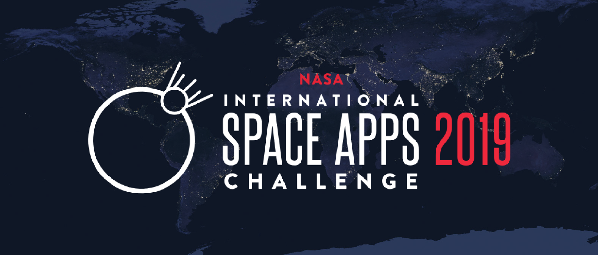

BUSINESS ANALYST & SOFTWARE ENGINEERING
Greetings! I am Jansen Lopez, a Freelance Business Analyst and Software Engineer in the Philippines. From being a Licensed Electrical Engineer, I've successfuly transitioned
my career towards Business Analytics, Software Engineering, and Social Impact. Most of the work I've done involves automation of business processes
starting from data capture up to data visualization with data extraction capabilites so that the Analytics Team(including me) can create specific reports, diagnosis, or interesting findings
that may help business efficiency, cost reduction, and revenue generation by utilizing well-known Data Science methodologies such as Forecasting, Classification, Clustering, and Dimensionality Reduction.
On the Social side of things, I was fortunate to be the Geospatial Analyst of a Dengue Forecasting initiative called AEDES Project which won the Global Award for the "Best Use of Data" Category
in the 2019 edition of NASA SPACE APPS HACKATHON. I detected Dengue hotspots using NASA and ESA's satellite images which after some post processing will result in a stagnant water index that will quantify the
degree of Dengue "prone-ness" of particular location. I primarily work remotely with a flexible schedule but in the event that a project or a task needs physical presence, depending on the arrangements, I can be there.
If you'd like to further inquire about my services you can contact me by clicking this LINK or by following any of my contact points below.
Linkedin: https://www.linkedin.com/in/jansen-lopez/
Email: lopez.jansend@gmail.com
Cheers!
Relevant Work Experience
Cirrolytix Research Services (2017 - present)
Data Analyst x Web Developer
>
Learn More
- Currently Developing four portals(Infosite, openData portal, Project Monitoring and Evaluation platform, Hackathon portal) for PROJECT SPARTA(The Philippine’s initiative to train 30k Data Scholars in 3 years). Aside from the actual development the Architectural Design of the tech infrastructure is part of my responsibility.
- Developed and deployed an image (retail producsts) auto-tagging web app to make it easy for workers to tag images (retail products) that will be used in training an Object Detection AI.
- Assisted in an Analytics Template for an FMCG Company using Retail Data. The most valuable modules on the template were 1. Use the a priori algorithm to know which two products are more likely to be bought together a classic Market Basket Analysis use-case. 2. Did affinity analysis on product categories strongly linked using ensemble methods such as clustering, multi-dimensionality scaling, and a distance function to measure the affinity. The results came to be suggestions on which categories should be placed together in a physical store.
InboundLabs (2017 – 2019)
Data Manager
>
Learn More
- Capture, Clean, and Manage all incoming user data from the website to assess the business’ health in the front-end. These reports were processed using Python and Google Sheets which are generated and reported on a monthly, quarterly and annual basis.
- Developed an automated data cleaning and data reporting pipeline that extracts data from Hubspot and into Google Sheets using the automation tool integromat.
Education, Certificates, and Awards

GLOBAL WINNER : NASA SPACE APPS CHALLENGE - (Verified Link)
6.431x: Probability - The Science of Uncertainty and Data
Education & Certificates (Verified Link)
6.00.2x: Introduction to Computational Thinking and Data Science (Verified Link)

INFX523-01: Globalization's Winners and Losers: Challenges for Developed and Developing Countries (Verified Link)